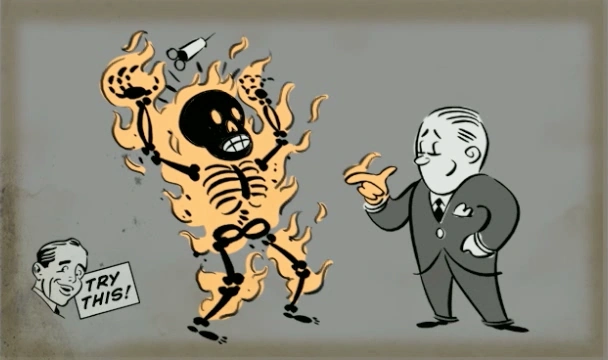

Importancia del juego
BioShock es más que un juego de disparos, presenta una crítica social y filosófica.
Proyecto Integrador - Programación III
Rapture es una ciudad submarina creada por Andrew Ryan como una utopía sin control externo. Sin embargo, el uso del ADAM provocó la caída de la ciudad.
El jugador controla a Jack, quien llega a Rapture tras un accidente aéreo y debe sobrevivir en un entorno hostil.
BioShock es más que un juego de disparos, presenta una crítica social y filosófica.

Permiten obtener poderes como electricidad o fuego.
Mejoran habilidades del personaje.
| Plásmidos | ||
|---|---|---|
| Nombre | Tipo | Uso |
| Electro Bolt | Elemental | Paralizar enemigos |
| Incinerate | Quemar enemigos | |
